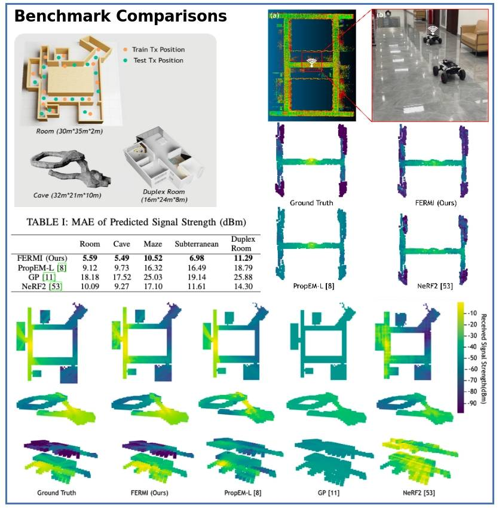
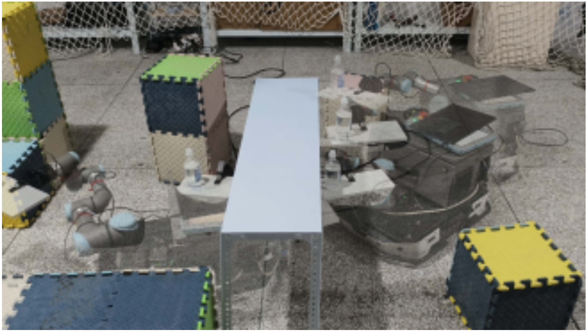
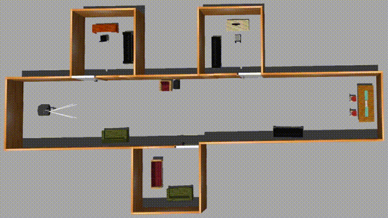

|
Chengkai Wu 吴程锴 I am currently pursuing a Ph.D. at The Hong Kong University of Science and Technology (Guangzhou), supervised by Prof. Boyu Zhou and Prof. Jun Ma since February 2025. Prior to this, I completed my Master's degree in Automation at Harbin Institute of Technology, Shenzhen (2022-2024). under the advisement of Jie Mei, I also received my B.Eng. in Electronic Information Engineering from Xidian University in 2022. Since January 2023, I have concurrently served as a visiting researcher at STAR Group supervised by Boyu Zhou. |
{kind=link}
ResearchI'm interested in motion planning, mobile manipulators, and unmanned aerial vehicles(UAVs). Most of my research is about enabling mobile robots move intelligently. Representative papers are highlighted. * indicates equal contribution |

|
ApexNav: An Adaptive Exploration Strategy for Zero-Shot Object Navigation with Target-centric Semantic Fusion
Mingjie Zhang, Yuheng Du, Chengkai Wu, Jinni Zhou, Zhenchao Qi, Jun Ma, Boyu Zhou 2025 IEEE Robotics and Automation Letters(RAL 2025) project page / video / arXiv / code A zero-shot object navigation framework that is both more efficient and reliable. |
|

|
FERMI: Flexible Radio Mapping with a Hybrid Propagation Model and Scalable Autonomous Data Collection
Yiming Luo, Yunfei Wang, Hongming Chen, Chengkai Wu, Ximin Lyu, Jinni Zhou, Jun Ma, Fu Zhang, Boyu Zhou 2025 Robotics: Science and Systems (RSS 2025) arXiv / code A flexible radio mapping framework. |
|

|
A Whole-body Planning and Control Framework for Mobile Manipulators with End-effector Pose Constraints
Shuo Su, Tanghao Qin, Chengkai Wu, Jia Hu, Youmin Gong, Jie Mei In Submission A novel whole-body planning and control framework for a mobile manipulator, with end-effector pose constraints. |
|

|
Real-time Planning for Interaction-Aware Autonomous Exploration with an Eye-in-hand Mobile Manipulator
Mianzhi Song, Chengkai Wu, Jinni Zhou, Jie Mei, Boyu Zhou In Submission video An interaction-aware exploration framework to thoroughly explore environments with obstructed spaces using an eye-in-hand mobile manipulator robot. |

|
Real-time Whole-body Motion Planning for Mobile Manipulators Using Environment-adaptive Search and Spatial-temporal Optimization
Chengkai Wu*, Ruilin Wang*, Mianzhi Song, Fei Gao, Jie Mei, Boyu Zhou 2024 IEEE International Conference on Robotics and Automation (ICRA 2024) Oral / Popular(top 14) project page / video / paper / code A motion planning method capable of generating high-quality, safe, agile and feasible trajectories for mobile manipulators in real time. |
Projects |

|
Air-Ground Coordinated Patrol and Tracking
Yiming Luo, Mingjie Zhang, Chengkai Wu, Boyu Zhou Traversable map generation and yaw-constrained trajectory optimization for quadrotors. |

|
DJI RoboMaster 2023-2024 University AI Challenge Competition - Classic
Third Place Chenxin Yu, Yuhao Fang, Zihong Lu, Xinlu Yan, Chengkai Wu(Co-Advisor), Jie Mei A perception, planning and control framework for autonomous drone racing using stereo camera. |

|
DJI RoboMaster 2022-2023 University AI Challenge Competition
Second Place Chengkai Wu(Team Leader), Zihan Gu, Aoqi Li, Jiangyuan Yue, Muqi Li, Guangyang Li, Lihong Li, Feng Tu, Jie Mei A perception, planning and control framework for autonomous drone racing using stereo camera. |
Template credits: Jon Barron |